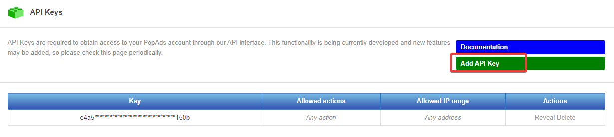

Vous devez créer un compte sur POP ADS mais aussi créer une campagne. À vous d’ajuster les options. L'outil récupère automatiquement l'ID de votre campagne en fonction de votre API KEY.
L’API POP ADS est accessible gratuitement depuis le dashboard.
En bas de page :
Ou sinon depuis l’URL suivante : https://www.popads.net/apikeys
Cliquer ensuite sur "ADD API KEY"
Puis sur "Create API KEY", vous pouvez définir une liste de réseaux qui peuvent utiliser votre API, j'ai laissé le champ vide.

Notez bien la clé API elle est nécéssaire pour l'installation de l'outil